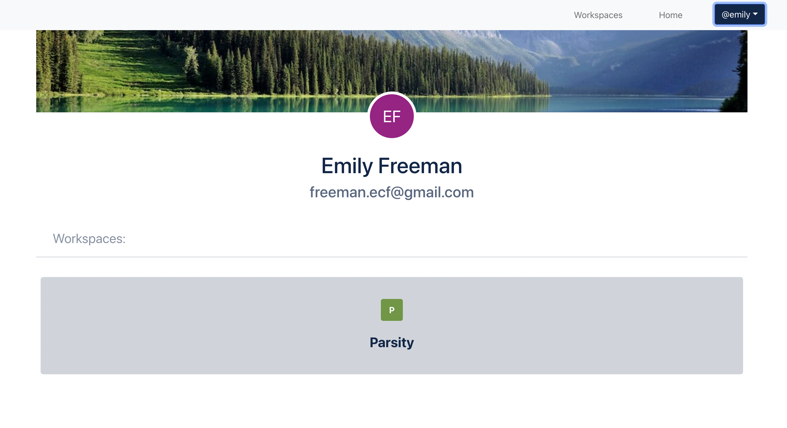
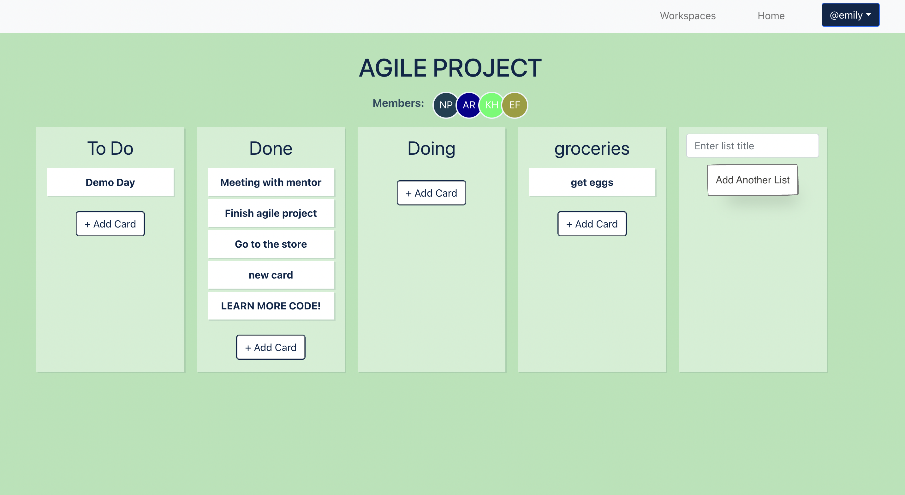
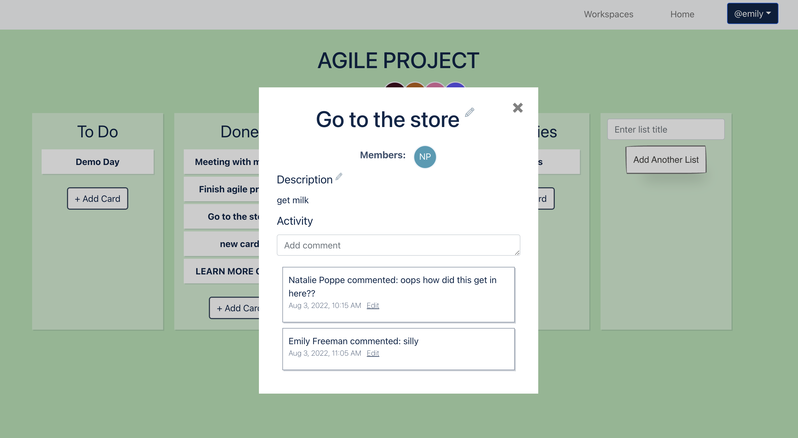

A full-stack web app that mimics the core functionality of Trello, a
social task management service. Trello(ish) was built in one month in an
agile development environment.

Create workspaces for all of your projects

Create lists to help organize your tasks and easily drag tasks from one
list to another

Communicate with your team on each task